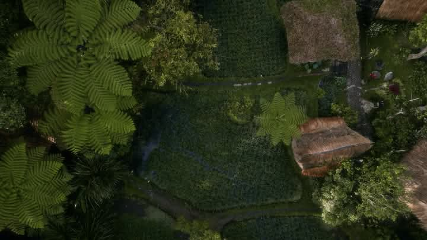
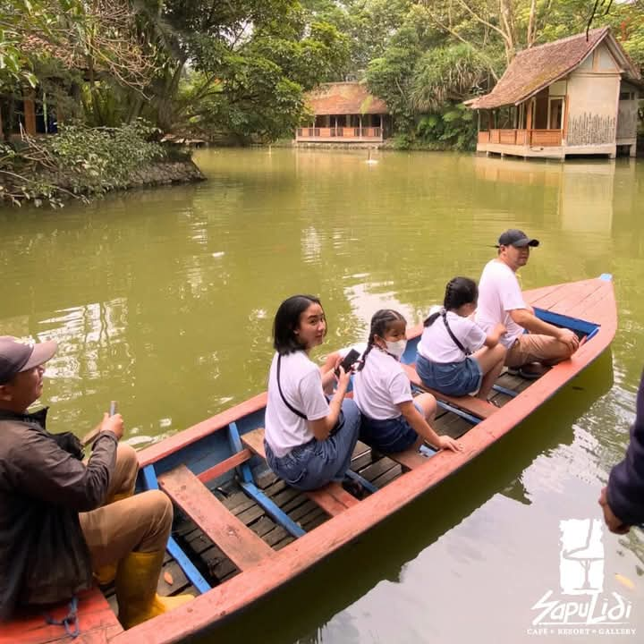
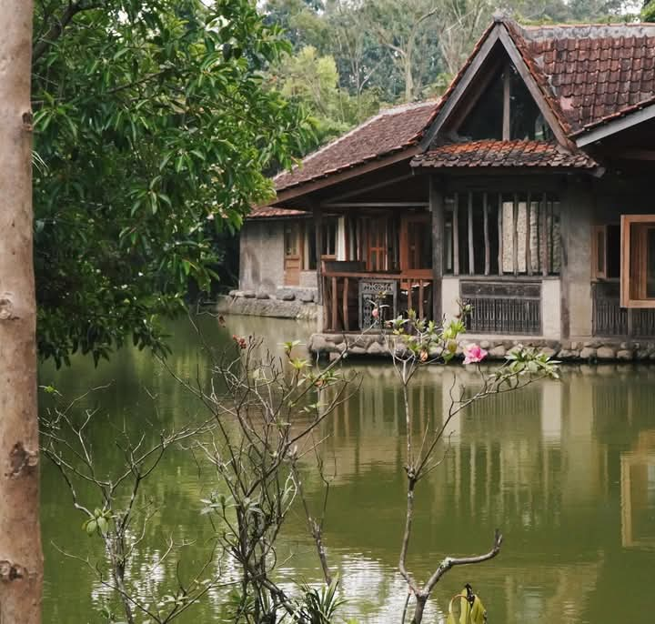

Mengapa Sapulidi
Bukan Sekadar Tempat Makan
Sapulidi adalah ruang pelarian. Setiap sudutnya dirancang untuk membawamu kembali ke pelukan alam yang damai.

6 Hektar Kemurnian Alam
Hirup udara sejuk Lembang di kawasan hijau yang luas. Dikelilingi rindangnya pepohonan, aliran air, dan hamparan sawah asri.

Mengarungi Danau Tenang
Tinggalkan kepenatan. Jelajahi danau buatan yang syahdu dengan sampan tradisional bersama orang tersayang.

Resort Unik di Atas Air
Rasakan syahdunya terbangun di dalam cottage kayu tradisional yang berdiri megah langsung di atas tenangnya danau.
Galeri Seni & Kerajinan
Temukan keindahan karya tangan seniman lokal. Setiap sudut galeri menyimpan cerita budaya Sunda yang kaya dan memukau.
Makan Siang di Tengah Sawah
Hirup udara sejuk Lembang dan manjakan mata dengan hamparan sawah hijau yang membentang. Nikmati kelezatan kuliner tradisional Sunda di bawah hangatnya mentari siang yang menenangkan.
Pilih Saungmu SekarangHubungi Kami
Reservasi & Lokasi
Kunjungi kami atau hubungi tim Sapulidi langsung untuk reservasi Saung dan paket cottage.
Alamat
Jl. Puspa Kenanga Barat 1
Cihideung, Kec. Parongpong
Kab. Bandung Barat, Jawa Barat 40559
Telepon
+62 22 2786 1234
Jam Operasional
Senin – Jumat: 10.00 – 22.00
Sabtu – Minggu: 08.00 – 23.00
✨ Siap merasakan pengalaman tak terlupakan?
Tim kami siap membantu reservasi saung & cottage favoritmu.
 Chat via WhatsApp
Chat via WhatsApp